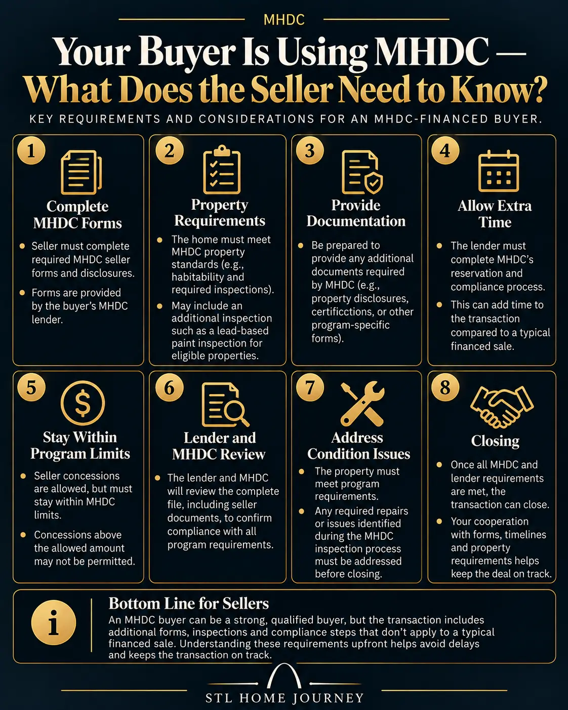

MHDC offers Missouri homebuyers mortgage programs with down-payment and closing-cost assistance. The headline sounds simple: qualified buyers can receive assistance equal to 4% of their first mortgage. The actual transaction is more complicated.
MHDC has income limits, purchase-price limits, property requirements, lender rules, deadlines, fees and—for First Place—documents that can involve the seller as well as the buyer.
I went through MHDC’s current First Place and Next Step operating materials to put those requirements into the order a homebuyer actually encounters them.
This guide is based on MHDC’s 2026 program documents. Program limits, rates and requirements can change, so verify current terms with an MHDC-certified lender before making a financial decision.
From MHDC’s 2026 income and purchase-price limits and First Place program materials. Program terms can change; confirm with an MHDC-certified lender.
They’re the Missouri Housing Development Commission’s two homebuyer mortgage programs, each with an optional down-payment and closing-cost assistance loan. You get them through an MHDC-certified lender, not from MHDC directly. First Place is mainly for first-time buyers; Next Step is open to first-time and repeat buyers with higher income limits.
For a household of one or two, income up to $113,500 under regular First Place, or $136,200 in a targeted area or under Next Step. The one-family price cap is $566,354, or $692,211 in a targeted area or under Next Step. The full tables are below. 2026 MHDC Limits for St. Louis ↓
Not everyone in the house. MHDC counts the income of everyone on the loan plus anyone married to them, even a spouse who isn’t borrowing. That spouse also counts toward household size, which sets which limit applies. A spouse with no income signs MHDC’s Form 522 to verify it. Your MHDC-approved lender makes the final calculation, so confirm it with them before you count on qualifying. Whose income counts ↓
MHDC’s program materials list a 640 minimum credit score, for FHA, VA, USDA and conventional first mortgages alike. Your lender can require more, and MHDC notes the requirement can change, so confirm it when you get pre-approved.
No. It’s a second mortgage equal to 4% of your first mortgage, and it’s forgiven only if you keep the home and the original loan long enough. How the forgiveness works ↓
Yes. MHDC works on top of an FHA, VA, USDA Rural Development or conventional first mortgage. The rules of that underlying loan still apply, along with MHDC’s own income, price and property limits.
For a household of one or two, income up to $113,500 under regular First Place, or $136,200 in a targeted area or under Next Step. The one-family price cap is $566,354, or $692,211 in a targeted area or under Next Step. The full tables are below.
MHDC treats the following as its St. Louis MSA for these limits: St. Louis County, St. Louis City, Jefferson County, Franklin County, Lincoln County, St. Charles County and Warren County.
| Household | Maximum Income |
|---|---|
| 1–2 people | $113,500 |
| 3+ people | $130,525 |
| Household | Maximum Income |
|---|---|
| 1–2 people | $136,200 |
| 3+ people | $158,900 |
Whose income counts: MHDC’s lender materials count the income of each person on the loan and anyone married to them. A spouse who isn’t on the loan still counts toward household income and household size, still has to meet the program’s eligibility rules and signs the deed of trust, though not the note or the title. A spouse with no income verifies that on MHDC Form 522. Your MHDC-approved lender makes the final income calculation, so ask them about anyone else in the household before you rely on a limit.
| Property | Non-Targeted | Targeted / Next Step |
|---|---|---|
| 1-family | $566,354 | $692,211 |
| 2-family | $725,146 | $886,289 |
MHDC’s current limits became effective in May 2026.
Check the property’s census tract, not the neighborhood name or ZIP code. Targeted status is set tract by tract, and MHDC provides a targeted-area lookup and tells buyers to verify the exact address. It matters: in a targeted tract, First Place doesn’t require you to be a first-time buyer, and the higher income and price limits apply.
First Place if you qualify for it. Next Step if you earn too much for regular First Place, or you already own or recently owned a home.
First Place is primarily the first-time-homebuyer program. Qualified veterans and buyers purchasing in federally targeted areas can receive exceptions to the first-time-buyer requirement. MHDC defines and administers additional borrower, income, property and loan requirements through its operating rules.
Next Step expands MHDC financing to first-time and repeat buyers and uses the higher income and purchase-price limits shown above. That makes Next Step relevant to buyers who earn too much for regular First Place or who already own—or recently owned—a home.
MHDC describes both programs as offering affordable mortgage financing with an optional cash-assistance component for down payment and closing costs.

Often less than 4%, after fees. On a $300,000 first mortgage, the 4% second mortgage is $12,000; if the lender charges the maximum 1% origination fee, $9,000 is left before any other costs.

With the First Place DPA option, MHDC provides a second loan equal to 4% of the total first-mortgage amount, secured by a second mortgage. It can be used toward down payment and closing costs.
| First mortgage | $300,000 |
| 4% DPA second mortgage | $12,000 |
| 1% origination fee (if lender charges max) | $3,000 |
| DPA minus that fee | $9,000 |
That’s effectively 3% of the first mortgage remaining after that particular charge.
But don’t automatically assume every MHDC borrower receives only 3%. The lender can charge less than 1% or no origination fee at all, and the buyer’s actual cash-to-close also depends on other closing costs, prepaid expenses, lender charges, seller credits, earnest money and the underlying mortgage.
The better question to ask an MHDC lender: “You’re showing me 4% DPA. After your origination and other lender/program charges, how much of that assistance actually reduces the cash I need to close?”
MHDC caps certain lender fees and prohibits others. The current First Place manual permits, among other things: origination fee up to 1%, application/processing/underwriting fees up to $1,100, a $275 funding fee, an $84 tax-service fee, and actual third-party costs for items such as appraisal, title work, surveys and certain inspections.
MHDC also expressly identifies fees that aren’t allowable under the program.
So comparing MHDC lenders shouldn’t stop at the interest rate. Ask for the complete fee structure.
In five steps: talk to a certified lender, pick the program, find a qualifying property, get it under contract, then close inside MHDC’s 60-day reservation window. This is the MHDC side of the deal. The rest of the purchase still happens around it, and the full St. Louis home-buying process lays out every stage from pre-approval through closing.

MHDC doesn’t directly originate the mortgage. A certified lender determines whether the buyer and proposed loan satisfy the MHDC program and the requirements of the underlying mortgage. Depending on the loan, that underlying financing may involve FHA, VA, USDA Rural Development, Fannie Mae or Freddie Mac requirements as well.
Not every requirement attached to an MHDC transaction is necessarily an MHDC requirement. Some come from the underlying mortgage program.
The lender needs to determine which program fits based on first-time-buyer status, veteran status, household income, household size, property location, targeted-area status, purchase price and mortgage type.
A buyer shouldn’t assume that being over the regular First Place income limit automatically ends the conversation. Next Step has higher limits and allows repeat buyers.
MHDC eligibility isn’t only about the borrower. The property has to qualify too. Buyers should tell their agent they’re using MHDC before writing the offer, not after they’re already under contract.
The MHDC reservation process occurs after the lender has the necessary borrower information and an executed purchase contract. Once the lender creates the reservation, the applicable program, mortgage type, DPA option and targeted/non-targeted designation are identified and the rate is locked.
Being preapproved for an MHDC loan isn’t the same thing as having MHDC funds reserved for a particular property.
Current MHDC reservations expire 60 days after reservation approval. Before expiration, the loan must close and the complete compliance package must be submitted to MHDC. Extensions can be requested but are discretionary and may involve fees.
This is why contract timing matters. MHDC financing shouldn’t be treated as an irrelevant detail that can be introduced late in the transaction.
MHDC doesn’t simply move an existing reservation to the new address. If the buyer changes properties, the original reservation must be canceled and a new reservation made. The same problem occurs when switching certified lenders: the reservation isn’t transferable.
Paperwork. The buyer’s lender has to collect First Place documents from the seller too, including MHDC’s Seller’s Affidavit (Form 525), signed by the people signing the deed.
This is one of the least obvious parts of an MHDC First Place purchase. The financing doesn’t necessarily stay entirely between the buyer and lender.
MHDC’s First Place documentation makes the originating lender responsible for buyer and seller First Place program documents. One of those documents is the Seller’s Affidavit—Form 525.
That means the seller can become part of the First Place compliance process even though the seller isn’t receiving the MHDC loan.
MHDC’s First Place requirements tie execution of the Seller’s Affidavit to the people executing the warranty deed, with additional instructions applying to circumstances such as spouses, estates and powers of attorney.
This isn’t something I’d want the listing side discovering shortly before a financing deadline.

I saw this issue firsthand while representing a seller in a 2023 St. Louis-area transaction.
The buyer intended to use MHDC financing, but that wasn’t disclosed to the listing side when the offer was accepted. Later in the transaction, MHDC requirements involving my seller surfaced.
Among them was an MHDC Seller’s Affidavit that needed to be executed as part of the buyer’s financing process. The timing mattered. My seller was traveling, the document required additional coordination, and the buyer was approaching a financing deadline.
What could have been anticipated earlier suddenly became time-sensitive.
The lesson wasn’t that MHDC financing couldn’t work. The lesson was that a buyer’s financing program can create requirements outside the buyer-lender relationship. If the buyer, buyer’s agent, lender, listing agent and seller understand those requirements from the beginning, they’re much easier to plan around.
That’s why I would tell an MHDC buyer: Tell your agent exactly what financing program you’re using before you write the offer.
Not necessarily. MHDC’s fee rules list home and pest inspection charges among allowable costs, but that doesn’t mean every MHDC buyer has to buy a separate inspection.
The underlying FHA, VA, USDA or conventional mortgage can also impose its own appraisal and property requirements. Don’t confuse three different things:
Your buyer’s home inspection — An inspection you obtain to evaluate the property’s condition.
The lender’s appraisal/property requirements — Requirements associated with the underlying mortgage.
MHDC program/property requirements — Additional eligibility and compliance rules imposed by MHDC.
They can overlap, but they aren’t interchangeable.
If a lender tells you an additional inspection is required, ask: “Is this an MHDC requirement, a requirement of my FHA/VA/USDA/conventional loan, or a lender overlay?”
Don’t assume the 4% DPA becomes a repair fund. MHDC has separate rules governing eligible uses of assistance and repair escrows, while the underlying mortgage program can impose additional property-condition requirements.
If an appraisal identifies required repairs, ask the lender specifically: Who must complete them? Can they be completed after closing? Is a repair escrow permitted? What funds can be used? Does FHA, VA, USDA, Fannie Mae or Freddie Mac control the requirement? Is MHDC adding another restriction?
Knowing whose rule you’re dealing with matters.
Only if you sell, refinance or stop living in the home before it’s forgiven. Forgiveness starts after year five and finishes at year ten.
For First Place DPA, think of it in phases:

Years 0–5: The second mortgage hasn’t begun its scheduled monthly forgiveness. Selling or refinancing during this period can create a repayment obligation.
Years 5–10: The second mortgage begins declining by 1/60 per month.
After year 10: If the borrower has satisfied the program’s requirements and maintained the home and original loan as required, the second mortgage reaches full forgiveness.
That makes your expected ownership timeline an important part of evaluating the program.
Don’t compare MHDC with another mortgage solely by asking “How much money do I get today?” Also ask: “What happens if I sell or refinance in three, five or seven years?”
More than “Do I qualify?” Ask these 15 before you write the offer:
If the lender can answer those questions clearly, you’ll understand far more than simply knowing that you’re “getting 4% assistance.”
Who qualifies
First Place if you qualify for it. Next Step if you earn too much for regular First Place, or you already own or recently owned a home. First Place vs. Next Step ↑
Check the property’s census tract, not the neighborhood name or ZIP code. Targeted status is set tract by tract, and MHDC provides a targeted-area lookup and tells buyers to verify the exact address. It matters: in a targeted tract, First Place doesn’t require you to be a first-time buyer, and the higher income and price limits apply. Targeted Areas ↑
Money and fees
Often less than 4%, after fees. On a $300,000 first mortgage, the 4% second mortgage is $12,000; if the lender charges the maximum 1% origination fee, $9,000 is left before any other costs. What the 4% Actually Covers ↑
MHDC caps certain lender fees and prohibits others. The current First Place manual permits, among other things: origination fee up to 1%, application/processing/underwriting fees up to $1,100, a $275 funding fee, an $84 tax-service fee, and actual third-party costs for items such as appraisal, title work, surveys and certain inspections. MHDC Lender Fee Rules ↑
Only if you sell, refinance or stop living in the home before it’s forgiven. Forgiveness starts after year five and finishes at year ten. Paying Back the 4% ↑
The transaction
In five steps: talk to a certified lender, pick the program, find a qualifying property, get it under contract, then close inside MHDC’s 60-day reservation window. This is the MHDC side of the deal. The rest of the purchase still happens around it, and the full St. Louis home-buying process lays out every stage from pre-approval through closing. The MHDC Transaction, Step by Step ↑
MHDC doesn’t simply move an existing reservation to the new address. If the buyer changes properties, the original reservation must be canceled and a new reservation made. The same problem occurs when switching certified lenders: the reservation isn’t transferable. Changing Houses or Lenders ↑
Paperwork. The buyer’s lender has to collect First Place documents from the seller too, including MHDC’s Seller’s Affidavit (Form 525), signed by the people signing the deed. What First Place Requires From the Seller ↑
Not necessarily. MHDC’s fee rules list home and pest inspection charges among allowable costs, but that doesn’t mean every MHDC buyer has to buy a separate inspection. Inspections and MHDC ↑
Don’t assume the 4% DPA becomes a repair fund. MHDC has separate rules governing eligible uses of assistance and repair escrows, while the underlying mortgage program can impose additional property-condition requirements. When the Property Needs Repairs ↑
More than “Do I qualify?” Ask which program and rate you’re getting, how much of the 4% is left after fees, what the seller will have to sign, when your reservation expires and what happens if you sell or refinance early. 15 Questions to Ask Your MHDC Lender ↑
Often, yes. MHDC cash assistance can cover your down payment while a seller concession pays for a rate buydown, but MHDC requires written approval for buydowns on First Place loans, so have your MHDC lender confirm before you make an offer. Lender fees can also trim the 4% assistance. The salary pages show what this does to cash to close at each income, for example $50K and $80K.
MHDC can make homeownership possible for buyers who would otherwise struggle with the upfront cash required to purchase a home.
But the program is more than a down-payment-assistance percentage. There is a first mortgage. There can be a second mortgage. There are income and purchase-price limits. There are lender fees. There are property requirements. There is a reservation deadline. There can be seller documentation. And the amount advertised as assistance isn’t necessarily the same thing as the amount by which your cash-to-close ultimately falls.
Understand the entire transaction before deciding whether MHDC is the right tool for your purchase.

I’m not selling you a house. I’m showing you how to think about buying or selling a house.
The Closing Pros LLC
Licensed Missouri Real Estate Brokerage · Office: 314-998-4550 · George’s Direct: 314.435.1087
Program rules and limits referenced here are based on MHDC’s 2026 published materials. MHDC can change rates, limits, fees and program requirements. Confirm current terms with an MHDC-certified lender before entering a transaction.